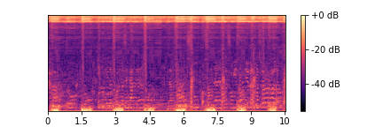

AMSS-Net
| order | description | Audio | Spectrogram | Wav |
|---|---|---|---|---|
| 0 | original |  |
||
| 1 | separate vocals, drums, bass |  |
 |
|
| 2 | pan drums completely to the right side |  |
 |
|
| 3 | pan bass to the left side |  |
 |
| order | description | Audio | Spectrogram | Wav |
|---|---|---|---|---|
| 0 | original | |||
| 1 | apply light highpass to drums |  |
 |
|
| 2 | apply heavy highpass to vocals |  |
 |
| Latent Source Channel | similar symbol | Audio | Spectrogram |
|---|---|---|---|
| N/A | origin | ||
| head=2, lach=4 | vocals + bass (low freq) |  | |
| head=5, lach=0 | drums | ||
| head=2, lach=6 | vocals | ||
| head=3, lach=5 | drum (clap-snare), piano |
| Latent Source Channel | similar symbol | Audio | Spectrogram |
|---|---|---|---|
| N/A | origin |  |
|
| head=2, lach=4 | vocals + bass (low freq) |  |
|
| head=5, lach=0 | drums |  |
|
| head=2, lach=6 | vocals |  |
|
| head=3, lach=5 | drum (clap-snare), piano |  |